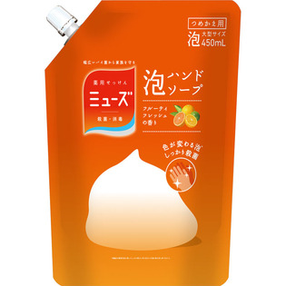

返回列表
产品名称：ミューズ泡ハンドソープ フルーティーフレッシュ 大型つめかえ用

レキットベンキーザー・ジャパン ミューズ泡ハンドソープ フルーティーフレッシュ 大型つめかえ用 ４５０ｍｌ（医薬部外品）
メーカー レキットベンキーザー・ジャパン
JANコード 4906156800210
商品の特徴
ヒアルロン酸2倍
泡ハンドソープ
- 成分・分量
- サリチル酸、高重合PEG、POEラウリルエーテル硫酸アンモニウム液、ヤシ油脂肪酸アミドプロピルベタイン液、濃グリセリン、エデト酸塩、ヤシ油脂肪酸ジエタノールアミド、POE(17)POP(17)ブチルエーテル、ヒアルロン酸Na-2、ビタミンCリン酸Mg、グレープフルーツエキス、メチルクロロイソチアゾリノン・メチルイソチアゾリノン液、クエン酸Na、POE・ジメチコン共重合体、クエン酸、香料、だいだい色205号、精製水、エタノール
- 用法及び用量
- 1.ポンプひと押しで約1回分がでます。
2.手にひろげて水またはぬるま湯で泡立てて洗い、よくすすいでください。